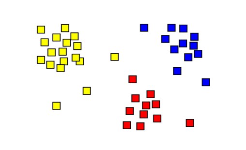

Personalized customer emails based on marketing analytics is a winning strategy for many digital companies.
We've been tasked by the DVD Rental Co marketing team to help them generate the analytical inputs required to drive their very first customer email campaign.
The marketing team expects their customer e-mail campaign to promote higher sales and engagement by sharing insights about each customer's viewing behaviour and delivering personalized recommendations!

In this project, we use Tableau to explore the FDA dataset to visualize and analyze medicinal drug consumption across locations and companies, as well as to discover adverse events across several parameters using Tableau.
A company is looking to invest in the Taxi industry.
We create a variety of analytical visualizations using Tableau to assist the firm in making informed and confident business decisions.

We analyze and explore the dvd rentals and health datasets in this project, identifying and dealing with duplicate records, and understanding summary statistics and distribution functions to treat outliers.

The objective of this project is to cluster locations for analysis based on historical sales data.

In this project, we classify the plant species based on various leaf metrics using classification algorithms.
We evaluate the health.user_logs dataset in this project to answer a few questions.

Created a dashboard for Twitter using the dataset from data.world showing key performance indicators and graphs for quick, organized review and analysis.